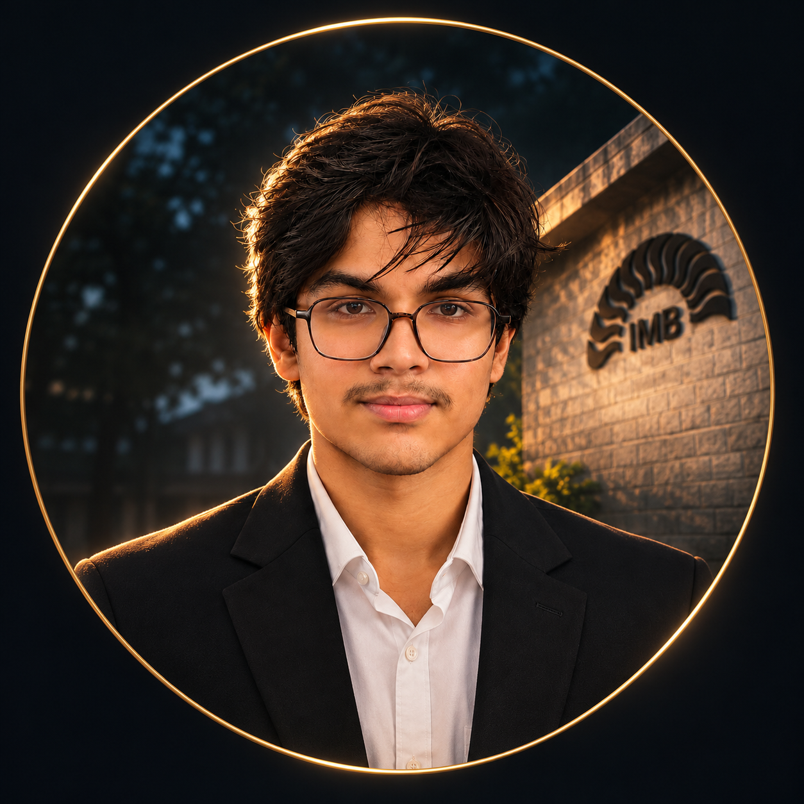

HELLO, I'M
A business student at IIM Bangalore, passionate about strategy, technology, competitive problem-solving, entrepreneurship and sports. I'm looking for an internship in consulting or finance.
Explore My Work → ↓ Download Resume
Among 14,000+ teams in India
Ongoing – Interview round next
Batch 2026 – 2029
Multiple-time school-level winner
Attacking Midfielder / Centre Forward at Kishore Club, Bhubaneswar Football Academy.
What connects business strategy, technology, science projects and the football pitch? A curiosity for understanding how things work and the drive to turn ideas into action. I'm a BBA student at IIM Bangalore with interests spanning business, entrepreneurship, technology and competitive problem-solving. Beyond academics, I enjoy exploring new challenges, participating in case competitions and pushing myself on the football field. I believe some of the best learning happens outside the classroom, through experimentation, experiences and the willingness to try something new.
Discover my story →✉ ashirbadpattanaik10@gmail.com
⌖ Bhubaneswar, Odisha, India